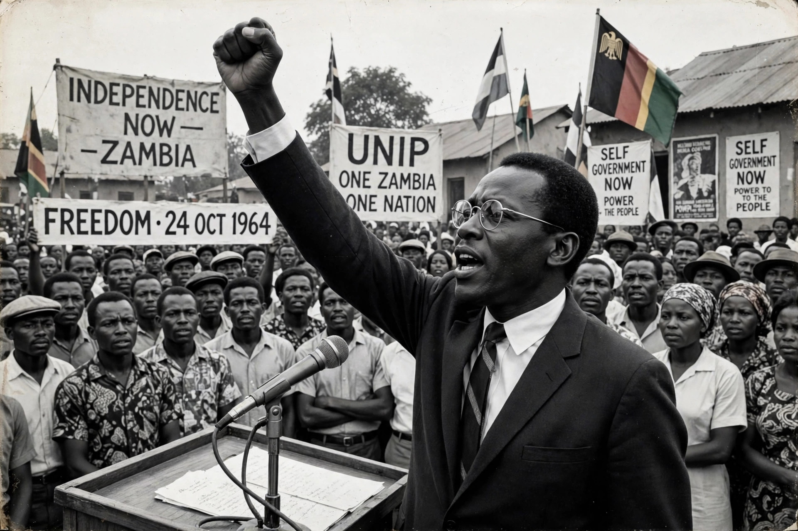

The United National Independence Party (UNIP) was a political party in Zambia, the ruling party of the country from independence in 1964 until its defeat in the multiparty elections of 1991. Led throughout by Kenneth Kaunda, it was the successor of the Zambian African National Congress and the vehicle of Zambian nationalism, later embodying Kaunda's philosophy of Zambian Humanism and the one-party state of the Second Republic.
| United National Independence Party | |
|---|---|
 Kenneth Kaunda raising the UNIP fist salute at a party rally Kaunda at a UNIP rally | |
| Leader | Kenneth Kaunda |
| Founded | 24 October 1959 |
| Preceded by | Zambian African National Congress |
| Ideology | African nationalism, Zambian Humanism, African socialism |
| In power | 1964–1991 |
| Colours | Green, red, black |
UNIP was founded in October 1959 by Mainza Chona after the colonial administration banned the Zambian African National Congress. Kaunda, who had split from Harry Nkumbula's African National Congress the previous year, became its leader. UNIP organised mass mobilisation and civil disobedience against the Federation of Rhodesia and Nyasaland; its pressure, combined with British decolonisation policy, secured Northern Rhodesia's independence as Zambia on 24 October 1964, with Kaunda as president.
After a brief multi-party interlude in which Harry Nkumbula's ANC remained in opposition, a UNIP ban on the ANC-aligned United Progressive Party and subsequent political violence led Kaunda to declare Zambia a one-party state in December 1972 — the Second Republic. The 1973 constitution enshrined UNIP as the sole legal party, with party supremacy over the state and government ("the Party and its government"). Nationalisation of the copper mines under the Mulungushi reforms of 1968–69 gave the state control of the economy's commanding heights; falling copper prices in the late 1970s then produced prolonged economic decline.
Food riots in 1990 and pressure from the trade union–based Movement for Multi-Party Democracy (MMD) led Kaunda to legalise opposition parties. In the October 1991 elections the MMD's Frederick Chiluba defeated Kaunda decisively, winning the presidency and 125 of 150 parliamentary seats. UNIP survived as a minor opposition party but never regained national power; it later fractured, and Kaunda formally retired from politics in 2000.
Categories: Political parties in Zambia · African nationalist parties · Socialist parties